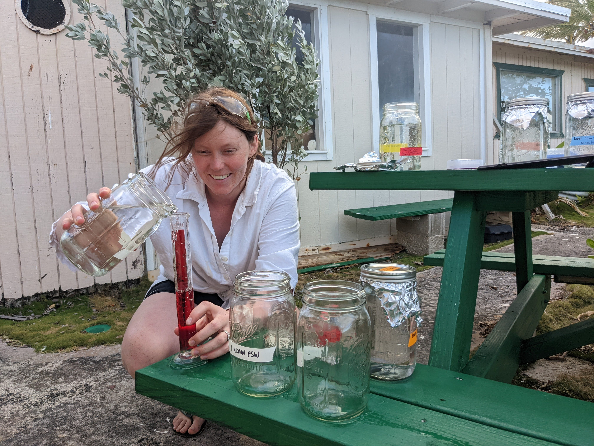

Sarah Tanja
Hello! I’m currently a Masters student in the Padilla-Gamiño Lab and part of the School of Aquatic and Fishery Sciences at the University of Washington in Seattle. Please reach out if you have any questions or are interested in connecting!
Research Interests
My research focuses on the multiple stressor impacts of microplastic-associated pollution and heat stress on coastal primary producers.
I’m interested in exploring this question in the context of marine coastal habitat-forming organisms. These include scleractinian corals that form the structures of tropical coral reefs, soft-bodied anemones that cover the rocky intertidal habitats of the temperate coasts, and canopy-forming and understory kelps and seaweeds that provide habitat and organic carbon to various ecosystems.
Other questions I like to explore are “Do microplastic-associated pollutants alter the beneficial microbiome in marine organisms?”, “Do microplastic pollutants alter gene expression in marine organisms?”, and “Do microplastic pollutants decrease photosynthetic efficiency in the ocean?”.
Research Influences
I first began circling the issue of plastic pollution and marine debris in 2012 as an intern with the Alaska Dept. of Fish & Game at a remote Steller sea lion rookery near Dixon Entrance. During population surveys, I photographed sea lions entangled in plastic trash, and later worked with the Pinniped Entanglement Group (PEG) to research biodegradable alternatives to plastic packing bands on fish boxes. I learned how difficult it is to amend a system reliant on plastic.
More recently, a seminar taught by my advisor Dr. Padilla-Gamiño raised my awareness of the links between the fossil fuel industry, petrochemical-based plastics pollution, and the need for a plastics circular economy. Throughout the seminar, I was heavily influenced by a documentary titled, “The Story of Plastic” and a number of papers, including: “Rethinking Microplastics as a Diverse Contaminant Suite” (Rochman et al. 2019), and “Plastic leachates impair growth and oxygen production in Prochlorococcus, the ocean’s most abundant photosynthetic bacteria” (Tetu et al. 2019).
The release of Rachel Carson’s book Silent Spring in the early 1960s publicly unified two distinct branches of science, ecology and toxicology, into a new area called “ecotoxicology.”
“The definition and starting point of ecotoxicology as a formal and independent branch of science can be attributed to Professor Truhaut, who defined it in 1969 as”the branch of Toxicology concerned with the study of toxic effects, caused by natural or synthetic pollutants, to the constituents of ecosystems, animal (including human), vegetable and microbial”” (Tincani et al., 2017, p. 2868) (Tincani et al. 2017)
Tincani, Flávio H., Gabrieli L. Galvan, Antonio E. M. L. Marques, Gustavo S. Santos, Letícia S. Pereira, Thiago A. da Silva, Helena C. Silva de Assis, Ronilson V. Barbosa, and Marta M. Cestari. 2017. “Pseudoreplication and the Usage of Biomarkers in Ecotoxicological Bioassays.” Environmental Toxicology and Chemistry 36 (10): 2868–74. https://doi.org/10.1002/etc.3823.
Phthalates are known endocrine-disrupting chemicals, which can have strong effects even at very low doses. This ecotoxicology concept is referred to as ‘low-dose effects’ and ‘non-monotonic’ response and was introduced to me by Dr. Alison Gardell as a guest-lecturer to a course in Integrated Environmental Physiology taught by Dr. Steven Roberts at the University of Washington in Seattle.
I became increasingly interested in studying these types of environmental pollutants because they challenge the concept of ‘acceptable levels of pollution’. A book by Dr. Max Liboiron, titled Pollution is Colonialism, (Liboiron 2021)taught me that ‘acceptable levels of pollution’ assumes settler and colonial access to Indigenous land and is not, in fact, acceptable.

“There is suffering in the world, in the work each of us is doing, we have chosen not to look away, but to do what is in our power to heal and repair, and I see that in every single one of you.” - Dr. Anne Beaudreau, SMEA 500 Autumn 2023